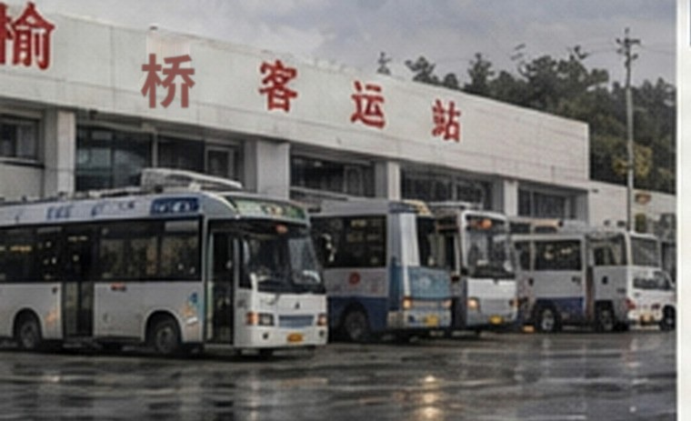

2026-09-30 18:21 编辑部
榆桥客运站今日停止使用
今天傍晚，榆桥客运站完成最后一批线路迁移。售票窗口关闭后，站务人员继续清点库房和办公室留存资料。

赵宁后来又想起一件小事。这些年父亲来接她、送她，都只到南门外面的雨棚；车到了，他帮她把箱子搬下来，车要走，他就站在那里，看她自己进站。
她以前一直觉得父亲只是嫌大厅里人多。
看过那张附页以后，她停了一会儿，说：“这个我现在也没法问了，那就先这样吧。”
榆桥客运站于2026年9月30日停止使用。历史网页与已公开资料继续保存在专题目录中。